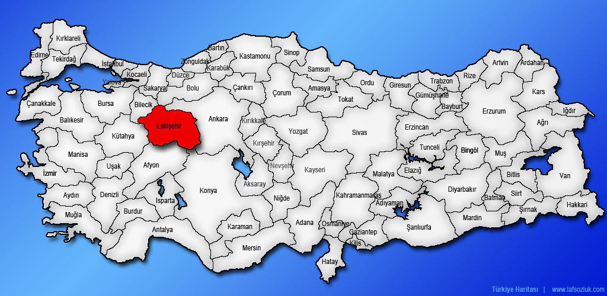

WELCOME TO ESKİŞEHİR


Eskişehir has lexical meaning:"old city". The city is located on the banks of the Porsuk River.It was founded by the Phrygians in at least 1000 BC, although it has been estimated to be older than 4000 years old. Many ancient geographers described the city as one of the most beautiful in Anatolia.
The city is also known as 'university town' owing to Osmangazi University and Anadolu University which has one of the largest student enrollments in the world.
"Devrim", the first Turkish automobile, was produced in 1961 at the TÜLOMSAŞ factory in Eskişehir. Devrim never put into mass production and stayed a concept study and can be viewed in TÜLOMSAŞ factory Eskişehir. In addition to production, first Turkish steam powered locomotive called "Karakurt" was produced at the TÜLOMSAŞ in 1961. Eskişehir was also the site of Turkey's first aviation industry (Aeronautical Supply Maintenance Centre) and its air base was the command center of Turkey's first Tactical Air Force headquarters on NATO's southern flank during the Cold War. And also the first stage of High-speed rail in Turkey. This service improved the travel and commerce between Eskişehir, Ankara, İstanbul, İzmir and many others, thanks to reduced journey time.
The city also have a football team which was teamed up 1965. Actually the supporters of Eskişehir Spor are extremely fanatic!
Do you like football? ES ES ES! Kİ Kİ Kİ! ESKİ ESKİ ES! ...